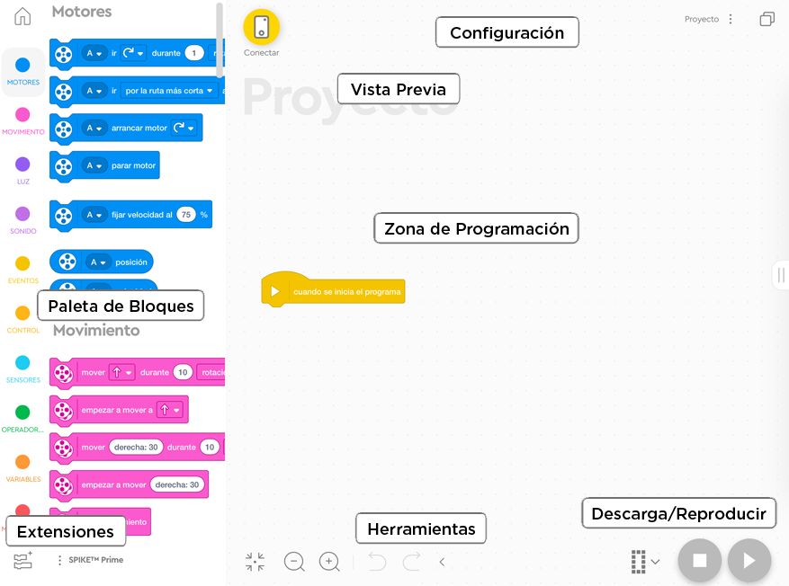

En esta parte aprenderemos a utilizar la aplicación de programación de nuestro bloque SPIKE Prime.
La aplicación SPIKE está actualmente disponible en dos versiones: aplicación de escritorio descargable y
aplicación en línea, que se puede utilizar mediante un navegador web. Las versiones son idénticas en
términos de funcionalidad, apariencia y contenido.
La aplicación SPIKE es agradable e intuitiva en su uso y la interfaz es estéticamente agradable, clara y
funcional.
La aplicación funciona en PC, ordenador portátil, tableta, iPad y Chromebook. Las posibilidades de
programación son las mismas en todos los dispositivos.
Los requisitos de la aplicación de escritorio SPIKE son:
- Windows
* Procesador Intel® Core i3 de 1,5 GHz o superior
* 4GB RAM
* 3 GB de espacio libre en disco
* Bluetooth 4.0 o más reciente
* Windows 10 (64 bits), ver. 1803 o posterior
- Mac OS
* Procesador Intel® Core Duo de 1,5 GHz o equivalente o superior
* 4GB RAM
* 2 GB de espacio disponible en disco
* Bluetooth 4.0 o superior
* macOS Mojave 10.14 o posterior
- Tableta iOS
* iPad Air 2 y iPad mini 4 o más reciente
* iOS 13 o más reciente
- Tableta Android
* pantalla de 8" o más grande
* RAM de 3GB
* 3 GB de espacio libre en disco
* Bluetooth 4.0 o superior
* Android 7.0 o posterior
La aplicación es común para los dos kits de robótica SPIKE, Essential y Prime, por lo que en primer lugar
tenemos que elegir el kit con el que estamos trabajando. En este caso SPIKE Prime.
El kit que se seleccione afecta los materiales educativos, así como a los bloques de codificación
disponibles, pero puede cambiarse en cualquier momento en la esquina superior derecha de la aplicación.
Ahora aparecerá nuestra pantalla de inicio de Lego SPIKE Prime.
En la sección de Primeros pasos (en la parte superior de la pantalla) contiene tutoriales que explican los
principios básicos de funcionamiento de los componentes electrónicos y te ayudan a probarlos.
En las secciones Unidades y Construcción (en la parte inferior de la pantalla) contienen instrucciones y
planes de lecciones proporcionados por LEGO.
En la sección Proyectos recientes (parte central de la pantalla), es donde aparecerán los proyectos más
recientes.
En la parte inferior de la pantalla, se repiten las secciones arriba explicadas mediante pequeños iconos.
Además tenemos otras secciones como la Ayuda con descripciones útiles de bloques de palabras e iconos y
Configuración, donde se puede, por ejemplo, cambiar el idioma de la aplicación.
Otra de las secciones que aparece es la de Mis proyectos. Es similar a la de Proyectos recientes, pero aquí
te deja administrarlos.
Cada proyecto es un programa por separado. En la pantalla de Mis proyectos podemos administrarlos, pudiendo eliminar, duplicar, cambiar nombre y compartir cada uno de los proyectos.
Si pinchamos en un nuevo proyecto (en la pantalla de inicio de SPIKE Prime), nos pedirá que seleccionemos el
interface de programación.
En SPIKE Prime podemos elegir entre tres opciones de programación:
- Bloques de iconos visuales
- Bloques de palabras
- Python (orientado a texto)
Seleccionaremos la opción bloques de palabras y nos abrirá la pantalla de programación.
Los bloques de palabras son piezas en forma de rompecabezas basadas en el famoso lenguaje de programación
SCRATCH. Los bloques están conectados entre sí verticalmente, por lo que el programa se ejecuta de arriba a
abajo. Una serie de bloques conectados se llama pila.
Hay diferentes tipos de bloques en el software Spike Prime que representan diferentes tipos de datos, cada
tipo de bloque tiene su propia forma, lo que evita errores de sintaxis.

En la pantalla de programación tenemos varias partes:
Esta es el área que incluye todos los bloques de programación Spike Prime, que se dividen en 10 categorías:
* Motores: Controla un motor individalmente.
* Movimiento: Controla dos motores a la vez con sincronización entre ellos.
* Luz: Nos permite ilumniar los LEDs de la matriz de nuestro bloque SPIKE Prime.
* Sonido: Reproducción de sonidos a trvés del altavoz de nuestro bloque SPIKE Prime.
* Eventos: Ejecución de acciones basadas en eventos como por ejemplo, un sensor o un temporizador.
* Control: Aquí es donde tenemos los bucles, las declaraciones if / else, etc.
* Sensores: Mediante estos bloques podremos leer los distintos valores obtenidos por los sensores.
* Operadores: Tenemos todos los operadores matemáticos y lógicos permitidos.
* Variables: en esta zona podremos crear variables o listas para poder almacenar datos.
* Mis Bloques: En esta parte podremos definir bloques personalizados.
También tenemos otra zona para las distintas extensiones que añadamos.
Para usar cualquier bloque, simplemente tenemos que arrastrarlo desde su categoría hasta la zona de
programación. Puedes presionar los botones de las distintas categorías para ver los bloques o usar la barra
de desplazamiento para encontrar un bloque.
Este es el área donde agregamos los bloques (los soltamos desde la paleta de bloques) para crear programas.
Esta es el área donde se pueden ver todos los proyectos abiertos y usar los controles importantes del proyecto, como el menú de inicio, iniciar un nuevo proyecto, cambiar el nombre del proyecto, mover el proyecto y guardarlo.
Esta es el área junto al botón de conexión del hub que solo aparece cuando un robot está conectado. Aquí se
pueden ver todas las lecturas actuales de los sensores conectados y acceder al panel de control presionando
el botón del hub conectado. Se todas las lecturas de los sensores internos (rotación del motor, giroscopio)
y externos (distancia, fuerza, color).
Para conectar el hub a nuestra aplicación haremos lo siguiente:
El panel del bloque SPIKE Prime se situa en la esquina superior izquierda y está representado por el dibujo
de un bloque SPIKE Prime. Mediante este icono, conectaremos nuestro bloque SPIKE Prime a la nuestro
dispositivo.
Para ello tenemos que asegurarnos de que el Bluetooth esté activado en la configuración del dispositivo.
Mantendremos presionado el botón central para encender el bloque SPIKE Prime.
Presionaremos el botón Bluetooth del bloque SPIKE Prime para habilitar Bluetooth.
Esperaremos a que el bloque SPIKE Prime aparezca en la lista de accesorios.
Si el bloque SPIKE Prime es nuevo, aparecerá con el nombre predeterminado "LEGO Hub" hasta que se le
dé un nombre único.
Hacer clic/toque el nombre de su bloque SPIKE Prime para comenzar a conectarse. Una vez conectado, el
bloque SPIKE Prime mostrará un ícono de Bluetooth y reproducirá un sonido para informarle que se
conectó correctamente.
Si pinchamos en él, nos muestra un resumen de los sensores y motores conectados y su estado, además de
otrs datos relativos al bloque SPIKE Prime conectado.
Esta es el área donde podemos encontrar herramientas útiles que se pueden usar regularmente mientras se usa el software de programación, incluidos los botones de acercamiento, alejamiento, restablecimiento de zoom y los botones de deshacer y rehacer. Estos botones podrían ocultarse presionando la flecha junto a las herramientas.
Esta es el área donde se encontrarán los botones utilizados para reproducir, detener y descargar programas en el hub. También puedes elegir la posición de almacenamiento donde se almacenará su programa. Cada hub tiene 20 posiciones de almacenamiento etiquetadas de 0 a 19, por lo que puede almacenar hasta 20 proyectos en su hub al mismo tiempo.
Al presionar el botón de extensiones, aparecerá la biblioteca de extensiones. Aquí encontraremos diferentes extensiones que se puede importar al proyecto y que agregarán bloques a la paleta de bloques, lo que le dará a los proyectos características adicionales.
Estas podrían ser:
* Bloques de gestión del clima para poder obtener el pronóstico del tiempo (el dispositivo debe
de estar conectado a una red wifi).
* Bloques para el control de los motores, además de los que ya vienen por defecto, para hacer que
mantengan su posición o accionarlos con potencia sin regular.
* Bloques de movimiento, además de los que viene por defecto, para fijar la velocidad de un motor
en concreto dentro de una base motriz o hacer que se mantenga en su posición.
* Bloques relativos a los sensores, además de los que viene por defecto, para obtener más datos
sobre los sensores tales como la aceleración o el color en bruto.
* Bloques de música para tocar instrumentos y poder reproducirlo en el dispositivo.
* Bloques para gráficos lineales para poder mostrar e interactuar con gráficos lineales.
* Bloques para gráficos de barras para mostrar gráficos de barra
* Bloques de pantalla para poder mostrar imágenes o texto